SR(Service Request) 관리 시스템 통합 매뉴얼
시스템 화면별 상세 기능, 인터랙션 정의 및 비즈니스 예외 조건을 가이드합니다.
📚 매뉴얼 활용 방법 및 이미지 등록 안내
본 매뉴얼은 각 화면의 주요 설명과 함께 화면 캡처 연동 기능을 제공합니다. 사용자는 실제 작동 중인 시스템 화면을 캡처한 후 아래 규칙대로 복사해 넣으면 웹브라우저에서 정상적으로 이미지가 표시됩니다.
| 구분 | 내용 및 저장 방법 |
|---|---|
| 이미지 저장 폴더 | d:/project/sr/public/images/manual/ (해당 폴더 부재 시 폴더 생성 필수) |
| 파일 포맷 및 크기 | 가로 넓이 1200px 이상의 PNG 이미지 포맷 권장 |
| 파일명 규칙 | 하단 가이드라인의 화면별 파일 이름 규칙을 대소문자 준수하여 정확히 기입 |
실제 이미지 파일이 준비되지 않았거나 로드에 실패할 시, 미려한 그라데이션 SVG 카드 플레이스홀더와 업로드할 타겟 파일명이 자동으로 표시되도록 설계되어 있습니다.
👥 사용자 역할(Role) 및 데이터 격리 원칙
본 시스템은 다중 테넌트(Multi-Tenant) 환경으로, 엄격한 고객사 데이터 격리 및 역할 기반 권한 제어(RBAC)를 따릅니다.
| 역할 (Role) | 주요 권한 범위 | 데이터 접근 제한 (격리 원칙) |
|---|---|---|
| SYSTEM_ADMIN | 시스템 전체 설정, 모든 고객사 및 사용자 CRUD, 전체 감사 로그(Audit Log) 조회 | 모든 고객사의 전체 데이터에 제약 없이 자유롭게 접근 및 조작할 수 있습니다. |
| CLIENT_ADMIN | 소속 고객사 소속 사용자 관리 및 소속 고객사 SR 관리 | 본인이 소속된 고객사의 데이터만 접근 가능합니다. 단, 데이터 삭제(Delete) 권한은 일절 부여되지 않습니다. |
| DEVELOPER | 배정된 SR 처리, 상태 업데이트, 개발자용 내부 노트 작성 | 자신이 담당자로 지정된 SR만 편집이 가능하며, 다른 개발자에게 할당된 SR은 수정이 불가능합니다. |
| CLIENT_USER | SR 신규 신청, 본인 신청 SR 목록 조회 및 공개 댓글 피드백 | 타 고객사의 데이터는 완벽히 격리되며, 본인 소속 고객사 및 본인이 직접 신청한 요청 이외의 정보는 조회할 수 없습니다. |
1. 로그인 화면 (Login)
시스템에 가입된 사용자가 이메일 인증 ID와 비밀번호를 기입하여 대시보드에 안전하게 접속하기 위한 관문 화면입니다.
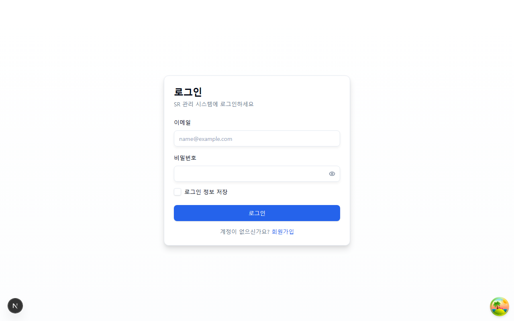
public/images/manual/01_login.png 파일로 스크린샷을 저장해 주세요.
주요 UI 구성요소 및 설명
| UI 요소명 | 입력 형태 | 주요 기능 및 동작 |
|---|---|---|
| 이메일 주소 | 텍스트 (Email) | 가입 신청이 승인 및 인증 완료된 고유 이메일 ID를 입력합니다. |
| 비밀번호 | 비밀번호 (Password) | 암호 강도 기준을 준수하여 설정했던 비밀번호를 입력합니다. |
| 로그인 상태 유지 | 체크박스 | 활성화 시 브라우저 쿠키를 기반으로 세션 유효 기간을 자동으로 연장합니다. |
6개월간 미접속하여 휴면(Dormant) 처리된 계정은 로그인 성공 시 바로 시스템 진입이 제한되며, 화면 상에 '휴면 계정 재활성화 승인 신청' 가이드 모달이 팝업됩니다.
2. 회원가입 화면 (Register)
신규 사용자가 본인의 신상 정보와 소속 고객사를 지정하여 시스템 사용을 요청하는 가입 화면입니다.
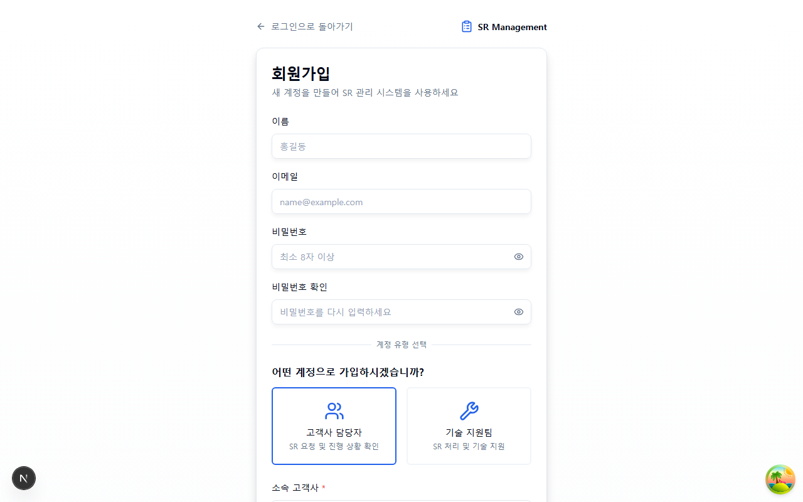
public/images/manual/02_register.png 파일로 스크린샷을 저장해 주세요.
주요 UI 구성요소 및 설명
| UI 요소명 | 입력 형태 | 주요 기능 및 동작 |
|---|---|---|
| 사용자명 / 휴대폰 번호 | 텍스트 | 사용자 이름 및 비상 연락망으로 작동할 모바일 전화를 기입합니다. |
| 고객사 검색 및 선택 | 자동완성 Input | 기등록된 고객사 데이터베이스에서 본인의 소속사를 자동완성 목록에서 정밀 선택합니다. |
| 부서/팀 선택 | 선택 드롭다운 | 위 고객사 검색으로 매핑된 조직의 하위 부서 노드가 자동으로 동적 제공됩니다. |
가입 완료 즉시 기입한 이메일 주소로 인증 링크가 담긴 자동 알림 메일이 발송되며, 해당 메일 내 승인 링크는 24시간 동안만 유효합니다.
3. 실시간 통합 대시보드 (Dashboard)
시스템에 산적된 SR 처리 프로세스를 실시간으로 관찰하고, 병목 현상 및 위험도가 높은 긴급 항목을 감시하는 모니터링 컨트롤 센터입니다.
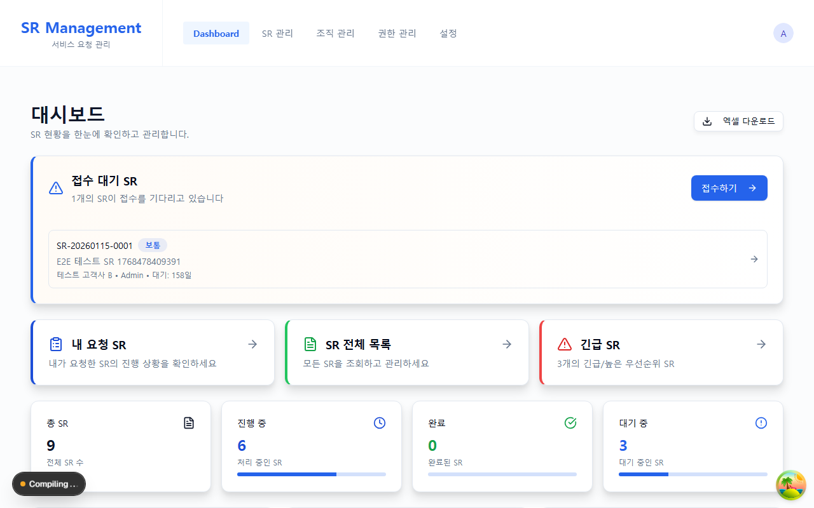
public/images/manual/03_dashboard.png 파일로 스크린샷을 저장해 주세요.
주요 UI 구성요소 및 설명
| 컴포넌트 영역 | 역할 및 표시 정보 |
|---|---|
| 실시간 SR 상태 카드 | 신청, 접수, 진행중, 보류, 완료, 거절 상태별 실시간 누적 카운트 표시. |
| SLA 경고 보드 (SLA Warning) | 우선순위별 처리 제한 시간이 임박한 긴급 SR들을 깜빡이는 적색 경고로 경보 제공. |
| 담당자별 로드 현황 차트 | 현재 개발팀 개별 인원에게 몰린 진행중 건수 분석 그래프 제공. |
4. SR 목록 화면 (SR List)
접수 및 진행 중인 모든 SR 내역을 효율적으로 정렬, 다차원 필터링 및 엑셀 다운로드하는 화면입니다.
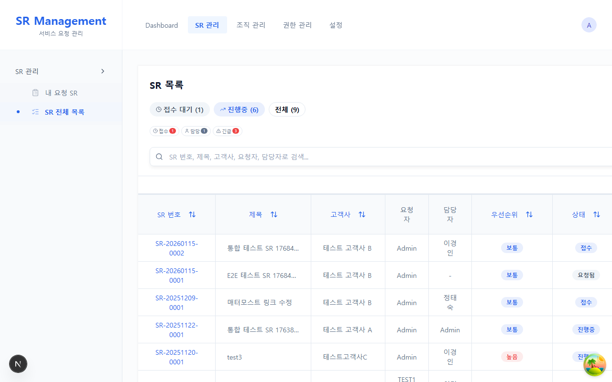
public/images/manual/04_sr_list.png 파일로 스크린샷을 저장해 주세요.
필터 가이드 및 조회 제약조건
상단의 고객사 필터는 SYSTEM_ADMIN만 전체 조회가 가능하며, CLIENT_ADMIN 및 DEVELOPER는 자신들이 관리 권한을 위임받은 범위 내의 고객사 데이터만 조회가 허용됩니다.
5. SR 상세 화면 및 상태 관리 (SR Detail & State Machine)
개별 SR의 메타 정보를 추적하고, 내부 기술 노트 기재 및 상태 기계(State Machine)를 제어하는 핵심 상세 화면입니다.
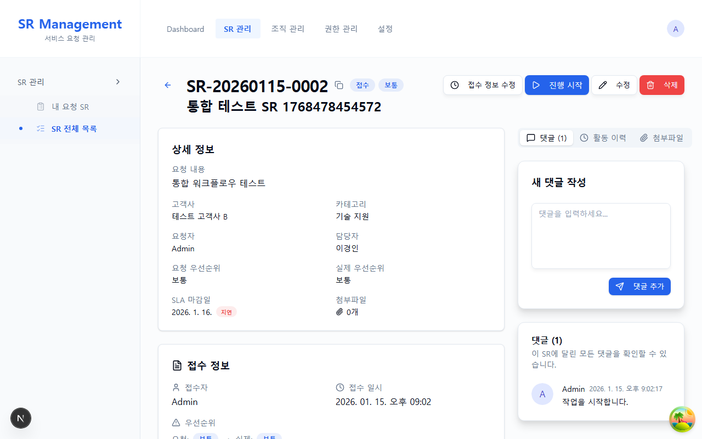
public/images/manual/05_sr_detail.png 파일로 스크린샷을 저장해 주세요.
- 거절(REJECTED) 처리 시: 반려 사유(Rejected Reason)를 미기입할 경우, API 및 프론트 영역에서 전이 저장이 차단됩니다.
- 완료(COMPLETED) 처리 시: 완료 상세 내용(Completion Notes)을 공란으로 둘 경우 검증 오류가 발생합니다.
- 재오픈(REOPENED) 신청 규칙: COMPLETED 또는 CLOSED 전환 이후 **최대 7일 이내에만 1회에 한하여 재오픈**을 걸 수 있으며, 이 때 반드시 재오픈 사유를 필수로 기입해야 합니다.
댓글 구분 및 정보 격리
상세 페이지 우측 피드 영역에서는 공개 댓글(고객사 신청자가 직접 관람 및 입력 가능)과 내부 노트(Private Note)(개발자 및 시스템 어드민만 조회 및 기록 가능)가 탭 형태로 명확히 분리되며, `CLIENT_USER`에게는 내부 기술 협의 노트가 절대 은닉됩니다.
6. 나의 요청 목록 화면 (My Requests)
고객사 소속 실무사용자(CLIENT_USER)가 본인이 요청한 SR만 모아 모니터링하고 신규 SR을 접수하는 전용 마이크로 화면입니다.
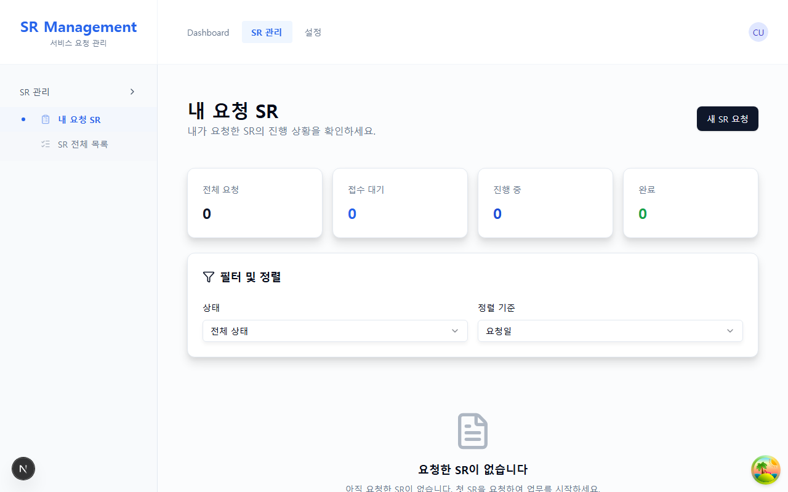
public/images/manual/06_my_requests.png 파일로 스크린샷을 저장해 주세요.
CLIENT_USER가 신규 요청을 작성하여 등록하는 순간, 관리자 또는 개발자의 1차 검토 전까지는 최초 우선순위가 항상 '중간(Medium)' 레벨로 강제 디폴트 매핑됩니다.
7. 고객사 관리 화면 (Client Management)
시스템에 소속된 계약 고객사를 신규 등록하고, 고객사별 서비스 카테고리와 담당 인력 매핑을 정밀 컨트롤하는 화면입니다.
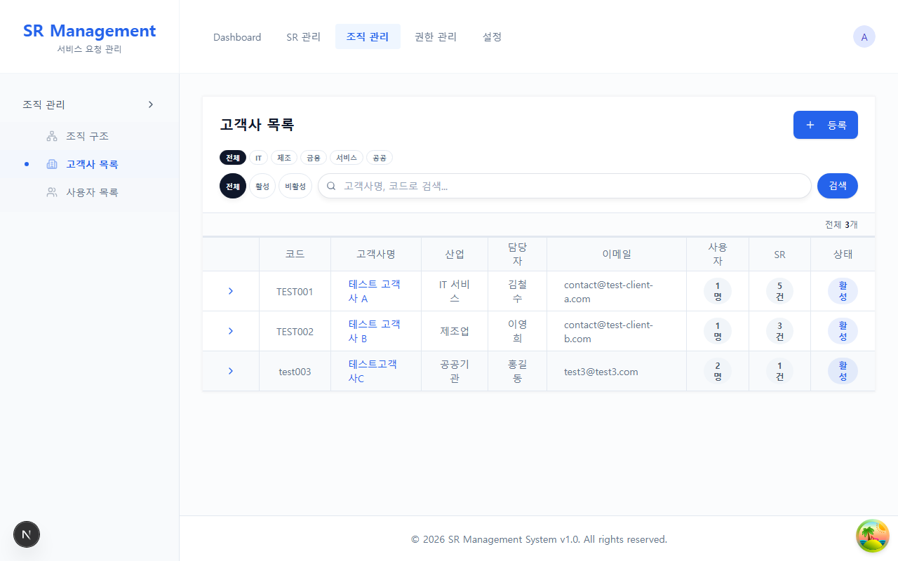
public/images/manual/07_clients.png 파일로 스크린샷을 저장해 주세요.
감사 로그 무결성을 위하여 고객사의 삭제(Delete)는 불가하며, '종료(Terminated)' 혹은 '보류(Suspended)' 상태 전이를 통한 데이터 비활성화 방식으로 생명주기를 강제 제어합니다.
8. 사용자 관리 화면 (User Management)
시스템 내 모든 사용자 계정 리스트를 출력하고, 계정의 휴면 해제 및 강제 비활성화, RBAC 역할을 할당하는 페이지입니다.
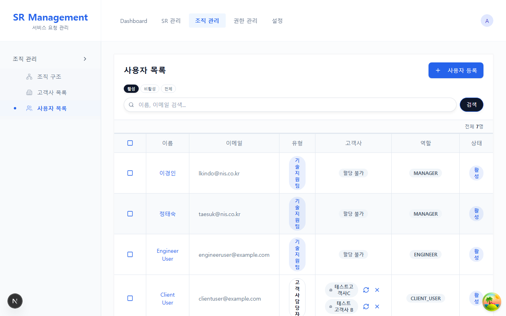
public/images/manual/08_users.png 파일로 스크린샷을 저장해 주세요.
9. 조직 관리 화면 (Organization Management)
각 고객사 하위에 등록되는 부서와 팀 계층 구조를 트리(Tree Grid) 뷰 형태로 일관적으로 설계하고 노드를 생성 및 가공하는 화면입니다.
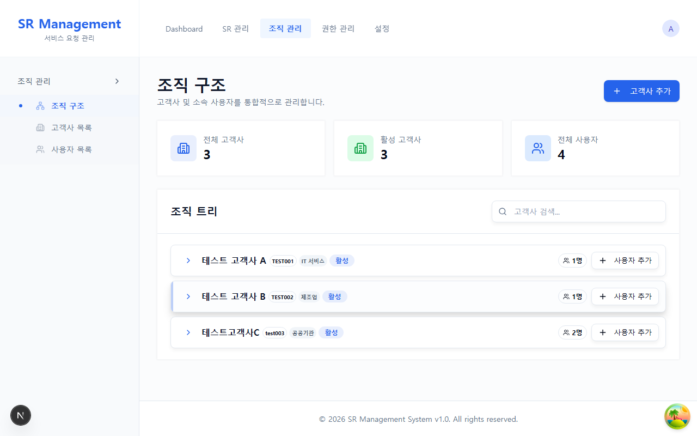
public/images/manual/09_organization.png 파일로 스크린샷을 저장해 주세요.
10. 역할 및 권한 설정 화면 (Roles & Permissions)
시스템에서 제어되는 각 세부 액션(API 퍼미션 단위)을 마스터 4대 역할 군에 체크박스 행렬 구조로 일괄 매핑하고 제어하는 최고 수준의 보안 설정 대시보드입니다.
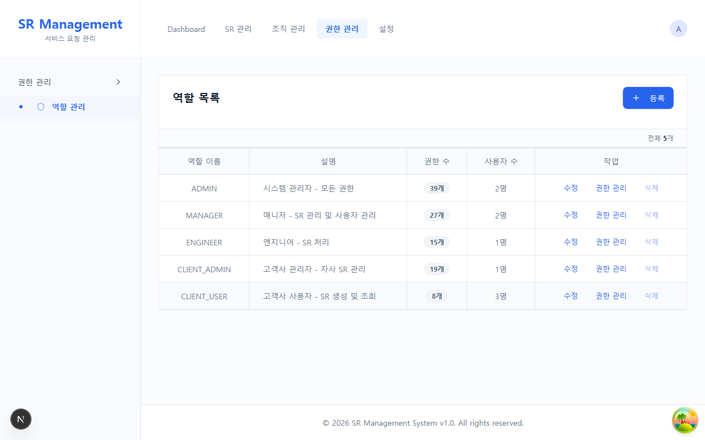
public/images/manual/10_roles.png 파일로 스크린샷을 저장해 주세요.
11. 개인 설정 화면 (Settings)
본인의 이름, 비상 연락처 변경과 함께 이메일 통지 수신 및 외부 메신저(Mattermost 웹훅) 연동 옵션을 구성하는 화면입니다.
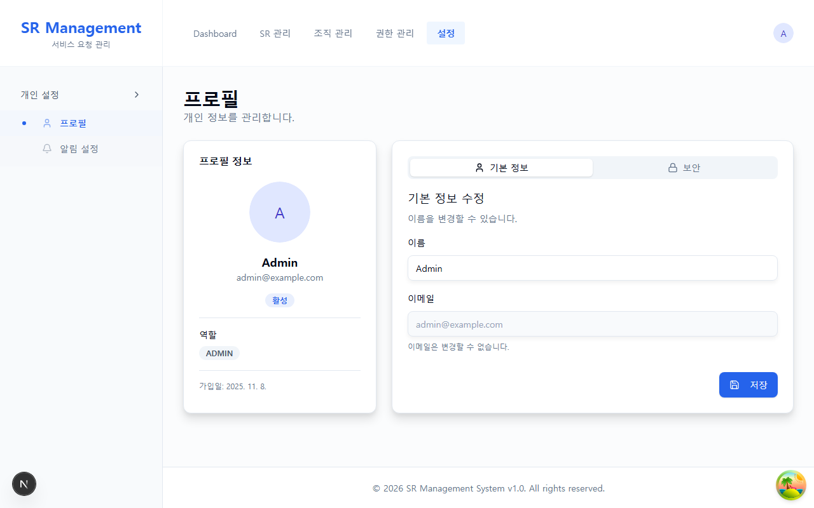
public/images/manual/11_settings.png 파일로 스크린샷을 저장해 주세요.
⏱️ SLA 및 우선순위 자동 알림 정책 요약
SR 등급별 핵심 운영 SLA 제한 시간 기준과 시스템에서 발송되는 실시간 3대 자동 알림 정책 조건입니다.
1. 등급별 SLA 처리 목표 기한
| 우선순위 레벨 | 접수 목표 시간 (SLA) | 처리 완료 목표 시간 (SLA) | 사후 초과 조치 |
|---|---|---|---|
| 긴급 (Critical) | 1시간 이내 | 4시간 이내 | 담당 개발자 및 CLIENT_ADMIN 대상 메터모스트 긴급 웹훅 즉시 전송 |
| 높음 (High) | 2시간 이내 | 24시간 이내 | 대시보드 상단 경고창에 경보 추가 및 예정 초과 메일 발송 |
| 중간 (Medium) | 24시간 이내 | 48시간 이내 | 통상 기준에 맞춘 일 단위 현황 집계 리포트 반영 |
| 낮음 (Low) | 48시간 이내 | 1주일 이내 | 정기 주간 분석 대상 통계 테이블로 분류 |
2. 실시간 3대 핵심 자동 알림 조건
| 트리거 조건 (이벤트) | 발송 대상자 | 활성 전송 채널 | 알림 헤더 및 수록 텍스트 |
|---|---|---|---|
| 신규 SR 등록 시 | 고객사 담당자 및 CLIENT_ADMIN | 이메일, 웹 푸시 | "[신규 접수] [고객사명] 신규 SR이 신청되었습니다." |
| SR 담당 개발자 배정 시 | 배정된 DEVELOPER | 웹 푸시, 매터모스트 웹훅 | "[배정 안내] 귀하가 담당 개발자로 지정되었습니다. 즉시 확인해 주십시오." |
| SR 거절(Rejected) 혹은 완료(Completed) | 최초 요청한 CLIENT_USER | 이메일 발송 | "[처리 결과 송신] 고객님이 등록하신 SR이 완료/거절 처리되었습니다." |